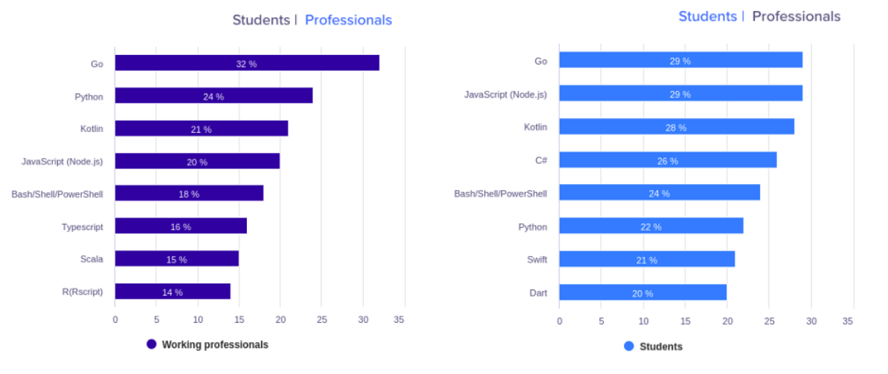

AI 和 数据科学领域，Go 语言可能很快会取代 Python。最后的原因有点迷
30 年前，Python 首次出现。但是花了 20 年时间才能获得开发人员的赏识。快进到 2019 年，它成为开发人员中第二受欢迎的语言。（来自 Stackoverflow 开发人员 2019 调查结果 ）
过去，尤其是在过去的 5 年中，它的增长是巨大的。Python 成为机器学习和数据科学开发人员的首选语言。
在接下来的几年中，Python 在这些领域的主导地位无疑会持续。但是与更新的语言相比，它具有一些严重的缺点。对于 21 实际 20 年代的开发者来说，这可能是一个障碍。
现在是检查 Python 问题并将其替换为更好的替代方法的正确时机。就 AI 开发和数据科学而言，我们的下一个入门语言可能是 Golang。
Python 受欢迎的原因
Python 受欢迎的主要原因是：它易于学习。与其他语言相比，它的语法很简单，任何人都可以在几小时或几天内学习 Python 的基础知识。
即使在学习了其他语言（例如 C++ 或 Java）之后，开发人员通常还是更喜欢使用 Python。那是因为有一个 Python 库，几乎可以满足所有人的要求。
库和简单的语法使使用 Python 开发软件既简单又高效。这些优势使 Python 成为了初学者的语言。
Python 问题
速度
Python 是一种解释型语言，这会引起 Python 的最大问题：执行缓慢。与其他编译语言（例如 C++ 和 Go）相比，Python 的执行速度很慢，非常慢。
Python 是一种动态类型的语言。在运行期间会自动分配变量的数据类型。这使执行速度大大降低。
使用 C/C++
为了克服 Python 运行慢的缺点，Tensorflow，Numpy 和 Pandas 之类的库部分用 C 或 C++ 编写。它们有助于显著提高执行速度。
基本上，Python 需要其他语言的帮助才能克服其问题。
全局解释器锁（Global Interpreter Lock）
Python 的全局解释器锁 （GIL）一次只能执行一个线程，同时提高了单线程性能。Python 的多线程并没有真正让多个线程同时运行。
实际上，Python 无法执行真正的多线程。
（注意：Python 的非 CPython 实现（例如 Jython 和 IronPython 没有 GIL））
为什么要使用 Go 语言？
Go 是一种开放源代码编程语言，可轻松构建，简单，可靠和高效。
“ Go” 在 10 年前首次亮相。它是 Google 开发的通用性编程语言。
与 Python 和其他编程语言相比，它具有多个优势，这就是我们感兴趣的原因。
快速
Go 是静态类型化和编译的语言。这意味着执行速度将比 Python 快几倍。与 Python 不同，Go 不需要其他语言的帮助就可以更快。
这是 Go 和 Python 之间的一个小型基准测试游戏比较 。Go 几乎与 C++ 和 Java 一样快。而且，Go 的代码编译速度比 C/C++ 和 Java 快得多。
简单易学
Go 的语法很简单，类似于 C。它是一种易于学习的编程语言，特别是已经了解 C 或 Java 语言的基础知识。
要了解 Go 的基础知识，请访问 Go 指南 进行交互式之旅或访问官方文档 。
越来越受欢迎
根据此次 Hackearth 对来自 76 个国家/地区的 16,000 多名开发人员的调查 ，Go 是 2020 年最受欢迎的编程语言。
32％ 的经验丰富的开发人员和 29％ 的学生说他们想学习 Go 不足为奇。

并发
并发是 Go 的主要优势之一。Go 具有 Goroutines 以实现并发。Goroutines 是可以同时独立运行的函数。
Goroutine 重量轻，仅占用 2KB（依赖于不同实现，目前 Go1.15 是 2KB） 的内存。由于 Goroutine 轻巧，因此可以同时运行成千上万个。
Goroutine 还有很多其他优点，比如：
- Goroutine 具有可增长的分段堆栈。这意味着它们仅在需要时才使用更多的内存。
- Goroutine 具有比线程更快的启动时间。
- Goroutine 带有内置原语，以在它们自己（通道）之间安全地通信。
- 使用 Goroutines 可以避免共享数据结构时不得不使用互斥锁。
- 此外，goroutine 和 OS 线程没有 1:1 映射。一个 goroutine 可以在多个线程上运行。 Goroutines 被多路复用到少量的 OS 线程中。
参考文章：为什么要学习 Go？ 。
是什么使 Go 适用于 AI 研究
将 Go 专门用于 AI 研究或数据科学并没有什么特别的。为什么应将 Go 用于 AI 和数据科学？我会告诉你的…但是等一下。
30 年前，尚未开发 Python 来构建机器学习或深度学习算法或进行数据可视化。
之所以是今天，是因为开发人员和学生们喜欢用 Python 进行代码编写，并且支持开发该开发人员意图的语言。
Go 旨在提高程序员的生产力。与 Python 相比，它具有多个优点。它很可能会在未来几年中成功取代 Python，成为最受欢迎的语言。
因此，它可以归结为 1 行：
Go 可以支持 “21 世纪 20 年代的开发人员”发展他们的思想，这比任何其他语言都要好得多。
原文链接：https://towardsdatascience.com/golang-ai-programming-language-for-the-20s-71890baa8c47
本文作者：Dasaradh Saran
编译：polarisxu